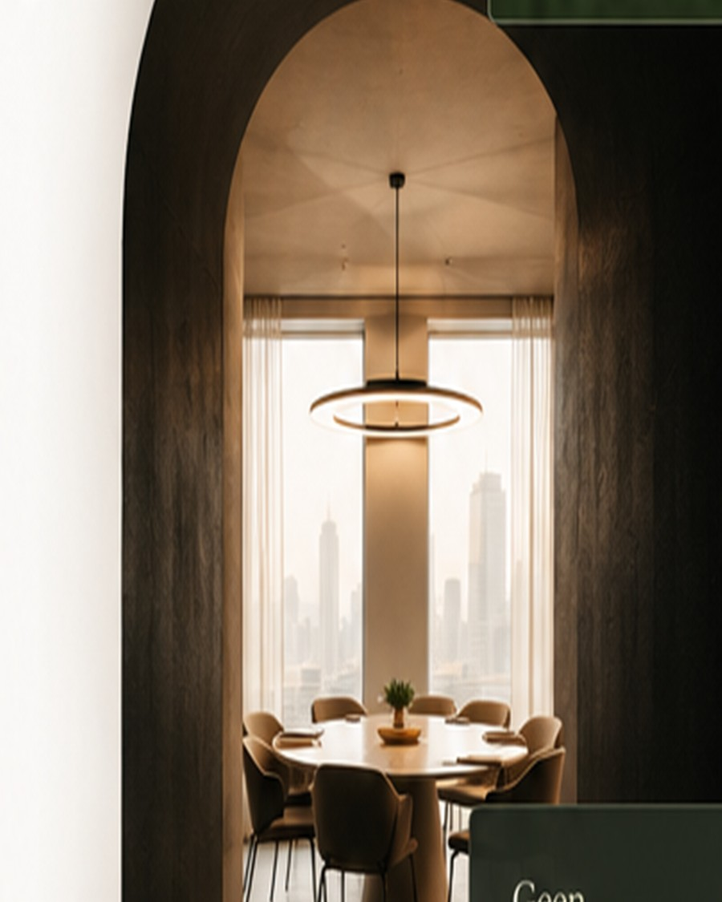

B2B event outreach
Wij zorgen voor een volle zaal met de juiste mensen.
Met slimme doelgroepselectie, persoonlijke uitnodigingen en meer grip op wie er echt verschijnt.

Opkomst én relevantie.
Meer aanwezigen die passen bij je event. Minder no-shows. Betere gesprekken.
-
Doelgroep
-
Uitnodiging
-
Registratie
-
Aanwezigheid
-
Follow-up
Waarom Benaderd
Meer relevante deelnemers. Minder no-shows. Betere gesprekken.
-
Relevante deelnemers
Je bereikt mensen die passen bij jouw event, niet een willekeurige mailinglijst.
-
Minder no-shows
Persoonlijke uitnodigingen en reminders zorgen voor hogere opkomst op de dag zelf.
-
Waardevolle gesprekken
De juiste mensen aan tafel levert gesprekken op die ertoe doen.
De echte uitdaging
Eerst genoeg mensen in de zaal. Dan de juiste mensen aan tafel.
Veel B2B-events vullen stoelen, maar missen de mensen die ertoe doen. Zonder gerichte outreach nodig je de verkeerde doelgroep uit, of juist niemand die bij je programma past.
Eventteams stellen steeds dezelfde vragen: wie nodigen we uit? Hoe houden we ze betrokken? En hoe zorgen we dat ze opdagen?
Event Pipeline Sprint
Alles wat je nodig hebt om de juiste mensen te bereiken.
Onze Event Pipeline Sprint brengt strategie, data en persoonlijke outreach samen in één sterke rondetafel. Vijf verbonden stappen voor sterkere opkomst en gesprekken die ertoe doen op je event.
Plan een Outreach ScanAan tafel
Juiste mensen.
Meer impact.
-
Doelgroep
ICP bepalen en de juiste profielen selecteren.
-
Uitnodiging
Persoonlijke LinkedIn- en e-mailuitnodigingen.
-
Registratie
Betrokkenheid vastleggen en verwachtingen helder maken.
-
Aanwezigheid
Reminders en no-show reductie tot op de dag zelf.
-
Opvolging
Post-event opvolging voor blijvende relaties.
Klaar om te starten?
Hoeveel relevante deelnemers mist jouw volgende event?
Plan een Outreach Scan en ontdek hoe Benaderd je event outreach versterkt.